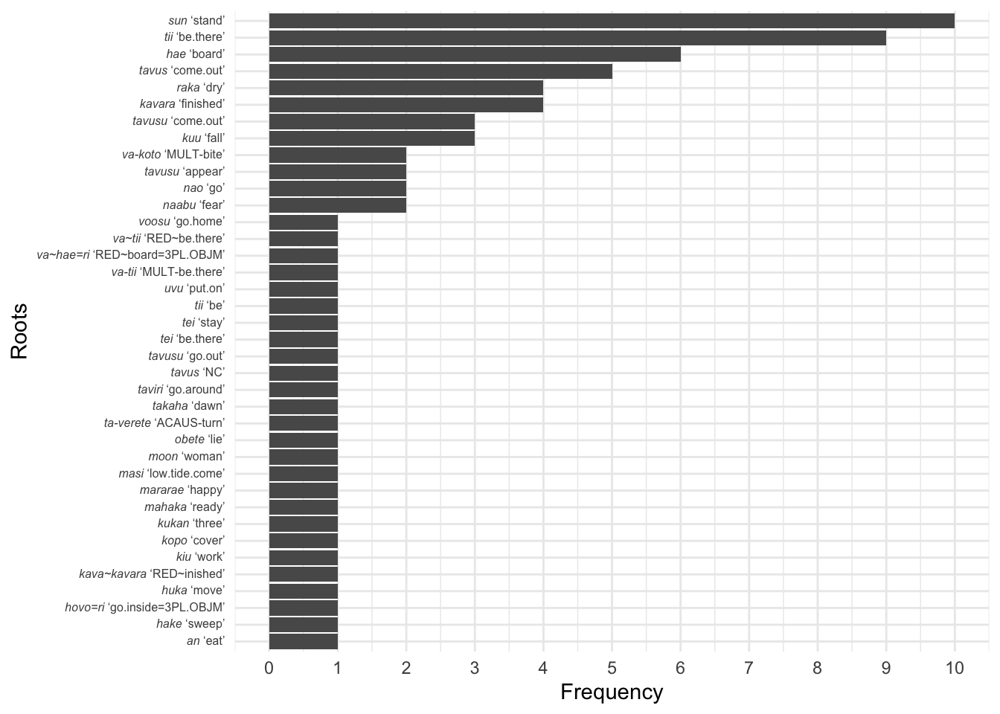

# If you do not already have the following packages installed, you will need to install them now. Note that we have added the package ggtext
# install.packages("phonfieldwork")
# install.packages("tidyverse")
# install.packages("here")
# install.packages("ggtext")
# Load required packages for ELAN file processing
library(phonfieldwork)
# Load for data wrangling
library(tidyverse)
# Load for consistent file paths
library(here)
# Load for markdown text formatting in plots
library(ggtext)
# Define corpus directory
corpus_dir <- here("doreco_teop1238_core_v2.0")Wrangling ELAN files to investigate morphology
We will build upon the R code we introduced in the last class Introduction to working with ELAN files in R in R Studio using phonfieldwork package to import ELAN .eaf files.
In this short exercise, we will first read in a single text, locate a fairly frequent affix, then output all of the roots (or bases) that combine with that affix. Then, we will read in the entire ELAN corpus and output all of the roots (or bases) that combine with the same frequent affix. We will then visualize this frequency with a plot.
Caution
We have tried to create code that applies broadly to the DoReCo corpora. However, it was not possible to test this code on each individual DoReCo corpus, so there is a chance you may not be able to produce the desired output. If you encounter issues that you are not able to fix, we will try to help you adjust the code.
If it is becomes too time consuming, we recommend you download the DoReCo Teop Corpus and move it to the same directory (i.e. folder) where this file is located.
Working with a single ELAN file
Importing a text with phonfieldwork
Pick any text in the corpus. We chose doreco_teop1238_Pur_05.eaf for our text in the Teop corpus.
# Import a specific ELAN file using phonfieldwork
text_df <- eaf_to_df(here(corpus_dir, "doreco_teop1238_Pur_05.eaf"))
# View the structure of the imported data
str(text_df)
# Display the first 20 rows
head(text_df, 20)Creating a word-deliminated data frame for the text
# Create word_id that groups consecutive rows belonging to the same word
word_text_df <- text_df |>
filter(tier_type %in% c("wd","mb","gl")) |>
mutate(word_id = paste0("w", cumsum(tier_type == "wd")))
# Display word-morpheme-gloss structure
word_text_df |>
select(1:8, last_col()) |>
head(26) tier id content tier_name tier_type id_ tier_ref event_local_id word_id
1 4 1 <p:> wd@Pur wd 889 ref@Pur a888 w1
2 5 1 <p:> mb@Pur mb 1902 wd@Pur a1901 w1
3 7 1 <p:> gl@Pur gl 4079 mb@Pur a4078 w1
4 4 2 O wd@Pur wd 890 ref@Pur a889 w2
5 5 2 O mb@Pur mb 1903 wd@Pur a1902 w2
6 7 2 ART3.SG gl@Pur gl 4080 mb@Pur a4079 w2
7 4 3 <p:> wd@Pur wd 891 ref@Pur a890 w3
8 5 3 <p:> mb@Pur mb 1904 wd@Pur a1903 w3
9 7 3 <p:> gl@Pur gl 4081 mb@Pur a4080 w3
10 4 4 hutate wd@Pur wd 892 ref@Pur a891 w4
11 5 4 hutate mb@Pur mb 1905 wd@Pur a1904 w4
12 7 4 story gl@Pur gl 4082 mb@Pur a4081 w4
13 4 5 na wd@Pur wd 893 ref@Pur a892 w5
14 5 5 na mb@Pur mb 1906 wd@Pur a1905 w5
15 7 5 3SG.POSS gl@Pur gl 4083 mb@Pur a4082 w5
16 4 6 <p:> wd@Pur wd 894 ref@Pur a893 w6
17 5 6 <p:> mb@Pur mb 1907 wd@Pur a1906 w6
18 7 6 <p:> gl@Pur gl 4084 mb@Pur a4083 w6
19 4 7 to wd@Pur wd 895 ref@Pur a894 w7
20 5 7 to mb@Pur mb 1908 wd@Pur a1907 w7
21 7 7 REL gl@Pur gl 4085 mb@Pur a4084 w7
22 4 8 tapogoro wd@Pur wd 896 ref@Pur a895 w8
23 5 8 ta- mb@Pur mb 1909 wd@Pur a1908 w8
24 7 8 ACAUS- gl@Pur gl 4086 mb@Pur a4085 w8
25 5 9 pogoro mb@Pur mb 1910 wd@Pur a1909 w8
26 7 9 produce gl@Pur gl 4087 mb@Pur a4086 w8Extracting affix gloss pairs with frequency
# Find affixes (e.g. morphemes containing hyphens) and assign to dataframe
affixes_text <- word_text_df |>
filter(tier_type == "mb") |>
filter(str_detect(content, "-")) |>
select(morpheme_id = event_local_id, morpheme = content)
# Assign glosses to dataframe
glosses_text <- word_text_df |>
filter(tier_type == "gl") |>
select(dependent_on, gloss = content)
# Match each morpheme with its specific gloss
affixes_glosses_text <- affixes_text |>
left_join(glosses_text, by = c("morpheme_id" = "dependent_on")) |>
select(morpheme, gloss)
# Display affixes with glosses
head(affixes_glosses_text, 10) morpheme gloss
1 ta- ACAUS-
2 va- MULT-
3 e- H-
4 vaa- CAUS-
5 koma- stomach|inside-
6 vaa- ORD-
7 vaa- ORD-
8 va- MULT-
9 va- CAUS-
10 vaa- CAUS-# Calculate frequency of affix-gloss pairs
affix_text_freq <- affixes_glosses_text |>
count(morpheme, gloss, sort = TRUE)
# Display affix frequencies
affix_text_freq morpheme gloss n
1 vaa- CAUS- 9
2 e- H- 8
3 va- CAUS- 2
4 va- MULT- 2
5 vaa- ORD- 2
6 koma- stomach|inside- 1
7 sina- mother- 1
8 ta- ACAUS- 1
9 tama- father- 1Extracting the roots that occur with a frequent affix
One of the most frequent affixes is the causative prefix vaa- ‘CAUS-’, so we will explore how many different roots (or bases) it attaches to. I define this affix below.
# Define the frequent affix
freq_affix <- "vaa-"
freq_gloss <- "CAUS-"
# Find words that contain both the frequent affix and gloss defined above, remove the target morpheme and gloss, combine
affix_gloss_roots_text <- word_text_df |>
# Find words that contain both the frequent affix and its gloss
group_by(word_id) |>
filter(any(content == freq_affix) & any(content == freq_gloss))
# Summarize remaining morphemes and glosses
affix_gloss_roots_text_summary <- affix_gloss_roots_text |>
summarise(
all_morphemes = paste(content[tier_type == "mb"], collapse = ""),
all_glosses = paste(content[tier_type == "gl"], collapse = "")
)
# Inspect the summary that contains the affix and gloss
affix_gloss_roots_text_summary# A tibble: 9 × 3
word_id all_morphemes all_glosses
<chr> <chr> <chr>
1 w1003 vaa-moon CAUS-woman
2 w212 vaa-masi CAUS-low.tide.come
3 w452 vaa-takaha CAUS-dawn
4 w687 vaa-tavus CAUS-come.out
5 w821 vaa-tavus CAUS-come.out
6 w827 vaa-tavus CAUS-come.out
7 w841 vaa-raka CAUS-dry
8 w847 vaa-tavus CAUS-come.out
9 w864 vaa-tavus CAUS-come.out # Remove the affix and gloss so that only roots are listed
affix_gloss_roots_only_text <- affix_gloss_roots_text |>
filter(content != freq_affix, content != freq_gloss)
# Summarize the morphemes and glosses as well as their frequencies
affix_gloss_roots_only_text_summary <- affix_gloss_roots_only_text |>
summarise(
roots = paste(content[tier_type == "mb"], collapse = ""),
glosses = paste(content[tier_type == "gl"], collapse = "")
) |> count(roots, glosses, sort = TRUE)
# Inspect the summary
affix_gloss_roots_only_text_summary# A tibble: 5 × 3
roots glosses n
<chr> <chr> <int>
1 tavus come.out 5
2 masi low.tide.come 1
3 moon woman 1
4 raka dry 1
5 takaha dawn 1Working with an ELAN corpus
Now let’s look at the same affix in the corpus.
Importing a corpus with phonfieldwork
# Find all ELAN files in the corpus directory
corpus_files <- list.files(corpus_dir,
pattern = "\\.eaf$",
full.names = TRUE)
# Read all ELAN files into a single dataframe
corpus <- corpus_files |>
map_dfr(eaf_to_df, .id = "file")
# Filter the corpus for core morphosyntactic tier types
corpus_df <- corpus |>
filter(tier_type %in% c("ref", "tx", "ft", "wd", "mb", "gl"))Creating a word-deliminated data frame for the corpus
# Create word_id that groups consecutive rows belonging to the same word
word_corpus_df <- corpus_df |>
filter(tier_type %in% c("wd","mb","gl")) |>
mutate(word_id = paste0("w", cumsum(tier_type == "wd"))) |>
group_by(word_id) |>
arrange(event_local_id, .by_group = TRUE)
# Display word-morpheme-gloss structure
word_corpus_df |>
select(1:8, last_col()) |>
head(50)# A tibble: 50 × 9
# Groups: word_id [14]
file tier id content tier_name tier_type id_ tier_ref word_id
<chr> <int> <int> <chr> <chr> <chr> <int> <chr> <chr>
1 1 5 1 <p:> mb@Asu mb 1750 wd@Asu w1
2 1 6 1 <p:> gl@Asu gl 2764 mb@Asu w1
3 1 4 1 <p:> wd@Asu wd 829 ref@Asu w1
4 1 5 10 vahara mb@Asu mb 1759 wd@Asu w10
5 1 6 10 little:PL gl@Asu gl 2773 mb@Asu w10
6 1 4 10 vahara wd@Asu wd 838 ref@Asu w10
7 1 5 110 a mb@Asu mb 1859 wd@Asu w100
8 1 6 110 ART gl@Asu gl 2873 mb@Asu w100
9 1 4 100 a wd@Asu wd 928 ref@Asu w100
10 2 4 79 teo wd@Gol wd 277 ref@Gol w1000
# ℹ 40 more rowsExtracting affix gloss pairs with frequency
# Find affixes (e.g. morphemes containing hyphens) and assign to dataframe
affixes_corpus <- word_corpus_df |>
ungroup() |>
filter(tier_type == "mb") |>
filter(str_detect(content, "-")) |>
select(file, morpheme_id = event_local_id, morpheme = content)
# Assign glosses to dataframe
glosses_corpus <- word_corpus_df |>
ungroup() |>
filter(tier_type == "gl") |>
select(file, dependent_on, gloss = content)
# Match each morpheme with its specific gloss (within the same file)
affixes_glosses_corpus <- affixes_corpus |>
left_join(glosses_corpus, by = c("file" = "file", "morpheme_id" = "dependent_on")) |>
select(morpheme, gloss)
# Display affixes with glosses
head(affixes_glosses_corpus, 20)# A tibble: 20 × 2
morpheme gloss
<chr> <chr>
1 vaa- CAUS-
2 vaa- CAUS-
3 e- H-
4 e- H-
5 vaa- CAUS-
6 e- H-
7 e- H-
8 e- H-
9 vaa- CAUS-
10 ta- ACAUS-
11 e- H-
12 e- H-
13 koma- stomach|inside-
14 mute- wife-
15 e- H-
16 e- H-
17 e- H-
18 va- ADVR-
19 koma- stomach|inside-
20 mute- wife- # Calculate frequency of affix-gloss pairs
affix_corpus_freq <- affixes_glosses_corpus |>
count(morpheme, gloss, sort = TRUE)
# Display affix frequencies
affix_corpus_freq# A tibble: 42 × 3
morpheme gloss n
<chr> <chr> <int>
1 e- H- 210
2 vaa- CAUS- 78
3 sina- mother- 44
4 va- ADVR- 43
5 va- MULT- 29
6 ta- ACAUS- 28
7 tama- father- 22
8 koma- stomach|inside- 20
9 moo- leg- 13
10 hena- name- 11
# ℹ 32 more rows# Find words that contain both the frequent affix and gloss, remove the target morpheme and gloss, combine
affix_gloss_roots_corpus <- word_corpus_df |>
group_by(word_id) |>
filter(any(content == freq_affix) & any(content == freq_gloss)) |>
filter(content != freq_affix, content != freq_gloss)
# Combine remaining morphemes and glosses
affix_gloss_roots_corpus_summary <- affix_gloss_roots_corpus |>
summarise(
roots = paste(content[tier_type == "mb"], collapse = ""),
glosses = paste(content[tier_type == "gl"], collapse = "")
) |> count(roots, glosses, sort = TRUE)
affix_gloss_roots_corpus_summary# A tibble: 38 × 3
roots glosses n
<chr> <chr> <int>
1 sun stand 10
2 tii be.there 9
3 hae board 6
4 tavus come.out 5
5 kavara finished 4
6 raka dry 4
7 kuu fall 3
8 tavusu come.out 3
9 naabu fear 2
10 nao go 2
# ℹ 28 more rowsaffix_gloss_roots_corpus_summary |>
ggplot(aes(x = reorder(paste(roots, glosses), n), y = n)) +
geom_col() +
coord_flip() +
scale_x_discrete(labels = function(x) paste0("*", word(x, 1), "*", " '", word(x, 2), "'")) +
scale_y_continuous(breaks = seq(0, max(affix_gloss_roots_corpus_summary$n), by = 1)) +
labs(x = "Roots",
y = "Frequency") +
theme_minimal() +
theme(axis.text.y = element_markdown(size = 6))